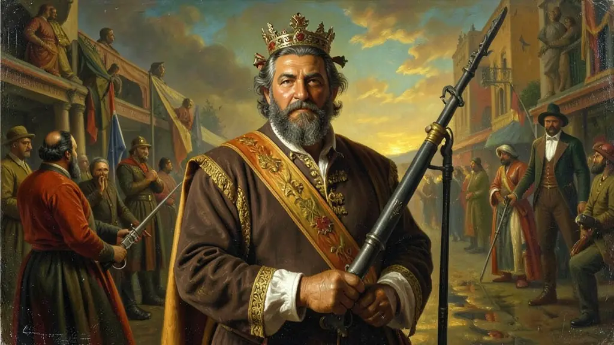

Capítulo 01
1. A Noite da Agonia e o Golpe do Rei
D. Pedro I disse que defenderia a Constituição 'se ela fosse digna de mim e do Brasil'. Em 1823, ele percebeu que os deputados queriam limitar seu poder. Ele mandou cercar a Assembleia com canhões, prendeu os deputados e dissolveu o governo legislativo. Esse ato de força foi a prova de que a independência não trazia a democracia, mas sim a troca de um rei europeu por um imperador local autoritário.
Capítulo 02
2. Constituição de 1824: O Quarto Poder
Outorgada (imposta) por D. Pedro I, foi a carta mais longeva do Brasil (65 anos). Criou quatro poderes: Executivo, Legislativo, Judiciário e o Moderador. Este último permitia ao Imperador anular qualquer lei ou demitir ministros a seu gosto. O voto era censitário (baseado na fortuna) e indireto, garantindo que apenas a elite rural tivesse voz no governo, mantendo o povo na plateia da história.
Capítulo 03
3. Confederação do Equador: O Fuzilamento de Frei Caneca
Pernambuco, Ceará e Paraíba não aceitaram o autoritarismo de 1824. Proclamaram uma República no Nordeste, querendo separar-se do Império. D. Pedro I não hesitou: contratou mercenários ingleses e franceses e mandou tropas terrestres para massacrar os rebeldes. Frei Caneca, o herói intelectual do movimento, foi executado por fuzilamento após os carrascos se recusarem a enforcá-lo por respeito religioso.

Capítulo 04
4. Cisplatina: A Província Perdida
O Brasil entrou em guerra contra a Argentina pela posse do que hoje é o Uruguai. Gastamos milhões, perdemos milhares de soldados e, no fim, a Inglaterra interferiu e criou o Uruguai como um 'Estado Tampão'. O povo brasileiro, faminto e endividado, culpou a incompetência de D. Pedro I pela derrota. Foi o início do fim do prestígio do imperador nos quartéis e nas ruas do Rio de Janeiro.
Capítulo 05
5. A Noite das Garrafadas e o Adeus
Brasileiros e portugueses brigavam nas ruas do Rio com garrafas e pedras. O clima de xenofobia era total. Ao perceber que não tinha mais apoio militar nem político (até os generais o abandonaram), D. Pedro I entregou a coroa a seu filho pequeno e partiu para a Europa na calada da noite. O 'brasileiro' D. Pedro I voltava a ser o 'português' D. Pedro IV. Começava o longo e instável Período Regencial.
O Primeiro Reinado (1822-1831) foi marcado pela instabilidade política e pela disputa entre o absolutismo de D. Pedro I e os interesses da elite agrária brasileira. A Constituição de 1824, outorgada pelo imperador após o fechamento da Assembleia Constituinte, instituiu o Poder Moderador, garantindo a D. Pedro autoridade absoluta sobre os demais poderes. Esse autoritarismo centralista, aliado à perda da Província Cisplatina e a crises financeiras constantes, gerou uma forte oposição liberal e provincial ao trono.
A Confederação do Equador (1824) foi a resposta revolucionária e republicana mais forte contra o centralismo imperial, unindo o Nordeste em uma luta pela autonomia. O reinado de D. Pedro I tornou-se insustentável com o envolvimento do imperador na sucessão do trono português e o assassinato do jornalista Líbero Badaró, que inflamou as ruas. A abdicação em 1831, em favor do filho de apenas cinco anos, não foi apenas uma derrota pessoal de Pedro I, mas a vitória provisória das elites brasileiras sobre o absolutismo lusitano.
O Enem costuma cobrar a outorga da Constituição de 1824 e o papel do Poder Moderador como elementos fundamentais da organização do Estado brasileiro. É essencial compreender que o Primeiro Reinado foi a 'prova de fogo' da unidade nacional, decidindo que o Brasil seguiria um modelo centralista e monárquico, em oposição à fragmentação republicana vista na América Espanhola. No entanto, foi um período de exclusão social profunda, onde a independência política não trouxe mudanças para a maioria negra e pobre.
Fonte: COSTA, Emília Viotti da. Da Monarquia à República. São Paulo: UNESP, 2010.
Atividades interativas
Questões para fixar
O 'Poder Moderador', instituído pela Constituição de 1824 no Brasil, exercia qual função no sistema político imperial?
A Confederação do Equador (1824), ocorrida no Nordeste brasileiro, teve como principal motivação:
Qual foi o evento que marcou a dissolução da Assembleia Constituinte pelo Imperador D. Pedro I?
Qual foi a consequência da Guerra da Cisplatina para o Brasil?
Qual foi o fator que contribuiu para a impopularidade de D. Pedro I e levou à sua abdicação?